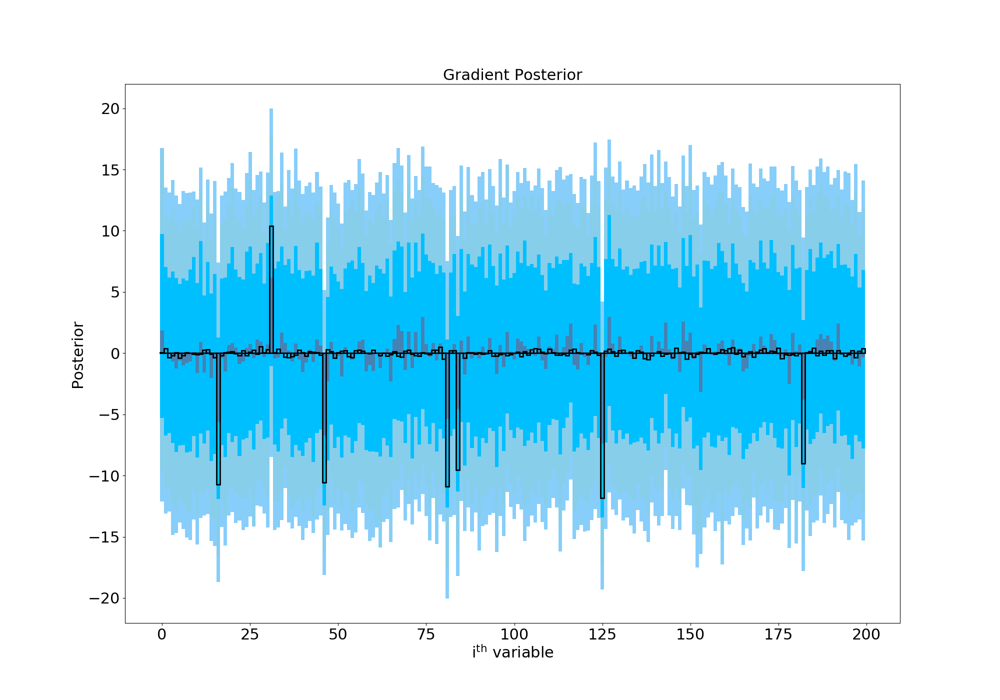
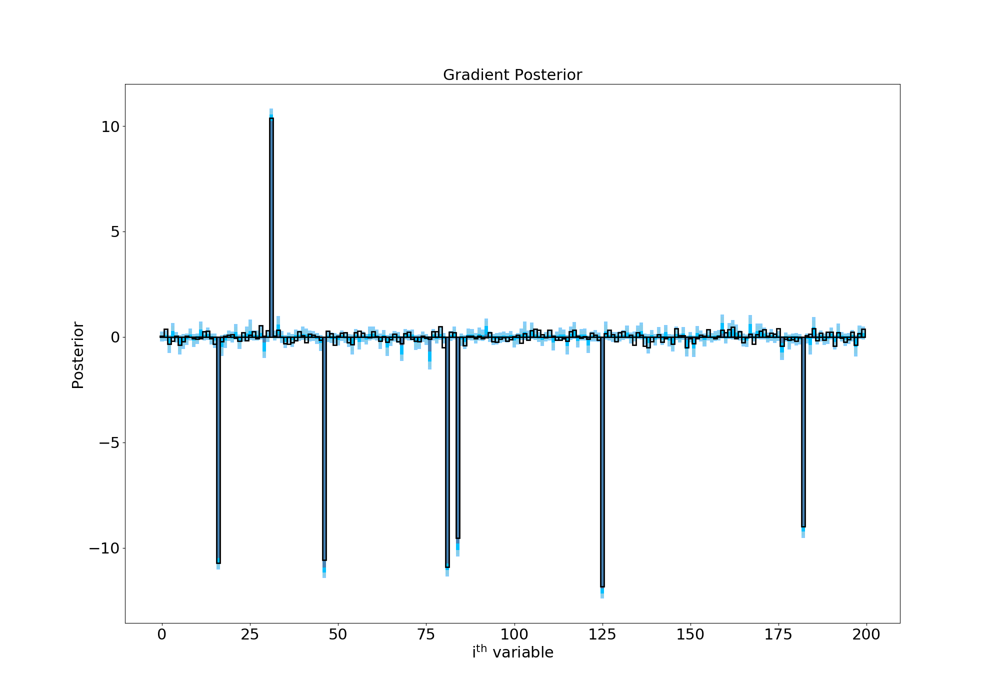
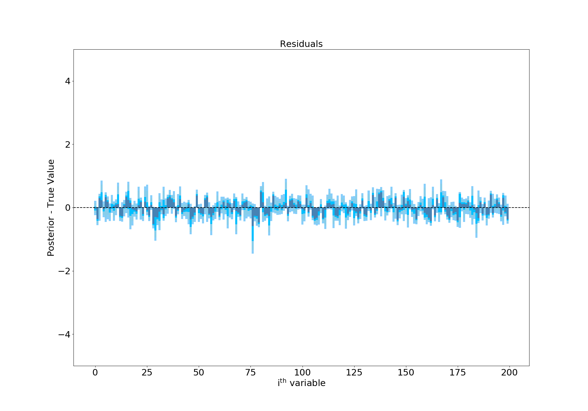

I’ve been reading the excellent blog by Michael Betancourt, who’s an applied statistician (and ex-physicist), for a while. He works on Hamiltonian Monte Carlo and its applications to statistical modelling problems, primarily through the language Stan. Whilst reading through his website, I thought it’d be a useful way to get more acquainted with PyMC3 (a python statistical modelling package which is similar to Stan) by translating some of his case studies to Python. The following is my attempt at performing “Sparse Bayesian Regression”, which is very important when you have a large number of variables and you’re not sure which ones are important. You can read Michael’s original blog, on which the following is based, here.
Sparse Bayesian Regression
Linear regression problems involve trying to predict the value of some variable, \(y\), based on one or a number of input variables, \(X\). \(X\) may be a single vector of \(N\) numbers or an \(M\times N\) matrix, where we have \(M\) variables with \(N\) observations of each one.
Put another way, let’s say we want to make a model to predict the life expectancy of people in the UK (our \(y\) variable). Our inputs could be things like income, postcode and amount of exercise each person does a week. If we had 100 people’s data in our model, our \(X\) would then be a matrix of shape \(3\times 100\). We might then (very simply) model the relationship between our input variables and our output variable as a linear one, such that we could write
\[
\begin{align}
y &\sim m \cdot X +c + \epsilon,
\\
\epsilon & \sim\mathrm{Normal}(0, \sigma^2)
\end{align}
\]
with \(\epsilon\) some “intrinsic scatter” in the relation and \(m\) and \(c\) some unknown numbers which we could find (by Maximum Likelihood methods or by sampling from the posterior using something like PyMC3 or emcee.
This is fine when we know exactly what our input data (\(X\)) should going to be. But what about when we have lots of things which might play a role in our model? Presumably we have more data than just the three variables I mentioned before. Why do we exclude things like “number of pairs of socks owned” or “distance from each person’s house to the nearest cinema”? Whilst it’s (very) unlikely that these parameters would have a large effect on a person’s life expectancy, wouldn’t it be nice for the data to tell us that itself?
This is where sparse methods come in. Sparsity is the assumption that although we may have lots of variables, we think that only a few should contribute to our final model. In frequentist statistics, methods like LASSO regression try and penalise large values of the gradient terms in our model (the \(m\)s from before) such that only a few of them (the most important ones) end up in our final model, and most of the others are forced to be very small. This process is known as regularisation. I hadn’t realised that transferring across these techniques to Bayesian statistics wasn’t completely straightforward, but Micheal’s case study on the topic summarises the issues nicely.
Essentially, applying a simple penalty to the likelihood function using a prior of the form
as in LASSO will fail because this was designed for frequentist point estimates. In Bayesian methods, we care about the whole distribution of values each \(m_i\) can take- and so values of the posterior below the regularisation scale \(\lambda_i\) will be driven to zero but values above it will be left alone. This tug-of-war on each end of our posterior isn’t what we want at all, and leads to biased inference and to wider distributions than necessary.
So what’s the solution? We need a prior distribution which acts on the whole posterior distribution of each \(m_i\), either driving it to zero or leaving it alone. This turns out to be an active area of research in statistics, and Carvalho, Polson, and Scott (2009) and Piironen and Vehtari (2017a) have come up with the “Horseshoe” and “Finnish Horseshoe” priors to come to our rescue.
A concrete example
Before we look at those, let’s set up an example and see why our normal way of solving it fails. We’ll say we have 200 different variables (\(M\)) and 100 different observations of each (\(N\)). Note that having \(M > N\) can be tricky, since the model is “non-identifiable”- there could be more than set of \(m\) and \(c\) values which give the same \(y\). It’s only the fact that we know (or assume) that lots of our \(M\) variables can be ignored which allows us to come up with useful results here.
We’ll make some fake data which follows a linear relationship, then try and infer the values of the parameters using PyMC3. Most of the gradient terms in the model will be around 0, but a small number won’t be:
Code
import numpy as npimport matplotlib.pyplot as pltM =200# Number of possible variablesN =100# Number of observations per variable# These are the true values of the parameters# We'll try and infer these using PyMC3c =3.0# Constant offset in the linear relationsigma =1.0# Intrinsic scatter in the model# Now go through and make 200 different true values of the slope# A few will be bigger/smaller than 0, most won't beprob_slope_is_meaninful =0.05m = np.empty(M)for i inrange(M):if np.random.binomial(1, 0.05): # random chance for slope to be 'meaningful'# Now select a positive or negative gradient with p=0.5if np.random.binomial(1, 0.5): beta[i] = np.random.randn() +10.0else: beta[i] = np.random.randn() -10.0else: beta[i] = np.random.randn() *0.25# Our inputs, X, and observed data, yX = np.random.randn(M, N)# Python3 dot product plus offset plus intrinsic scatterY = X.T @ m + c + np.random.randn(N) * sigma
Now, if we know that our gradient values are going to be somewhere between -10 and 10 (by, say, plotting the data and having a look at it), we might think that the following simple model would work:
Code
with pm.Model() as simple_model:#What if we try and use a wide prior here? gradient=pm.Normal('m', mu=0.0, sd=10.0, shape=M) offset=pm.Normal('c', mu=0.0, sd=2.0) sigma=pm.HalfNormal('sig', sd=2.0) y_inference=pm.Normal('y', mu=pm.math.dot(X.T, gradient)+offset, sd=sigma, observed=Y) trace_wide=pm.sample(2000)
Ideally, we’d hope that this would have the flexibility we’d like- gradient terms around 0 to stay at 0 and the few large values to settle on their correct values. However, when we run things our posterior looks like this:

Posterior with a wide prior
Here I’ve plotted the posterior distribution of the gradient for each of the 200 variables we have. In black are the true values which we’re trying to recover. The median of the posterior is shown in grey for each variable, and we’re hoping that those bars closely follow the black outlines. The shaded regions show the 68%, 90% and 95% confidence regions for each parameter, and so ideally we want those to be as small as possible. Since we can see they’re very large, this plot is telling us that this model has failed miserably- you really can’t say much about any one of these gradient values with any confidence. I also tried a Laplace prior (in the spirit of “Bayesian LASSO”- from e.g Park et al. 2008) instead of a Normal one, which showed an improvement but still wasn’t completely satisfactory.
Can the Finnish Horseshoe help? It’s quite a tricky hierarchical model, and following Micheal’s blog post led me to changing some of the default HMC NUTS parameters. You can see that we’re also using a “non-centered” model which is often easier to sample from:
Code
#Guess as to number of 'meaningful' gradients we have- order of magnitude is okay! mo=10#Other constants for the model slab_scale =3 slab_scale_squared=slab_scale*slab_scale slab_degrees_of_freedom=25 half_slab_df=slab_degrees_of_freedom*0.5with pm.Model() as finnish_horseshoe_prior: tau0 = (m0 / (M - m0)) * (sigma / np.sqrt(1.0* N))#Non-centered distributions- loc=0, width=1 then shift/stretch afterwards gradient_tilde = pm.Normal('gradient_tilde', mu=0, sd=1, shape=M, testval=0.1) lamda = pm.HalfCauchy('lamda', beta=1, shape=M, testval=1.0) tau_tilde = pm.HalfCauchy('tau_tilde', beta=1, testval=0.1) c2_tilde = pm.InverseGamma('c2_tilde', alpha=half_slab_df, beta=half_slab_df, testval=0.5)#Do the shifting/stretching tau=pm.Deterministic('tau', tau_tilde*tau0) c2=pm.Deterministic('c2',slab_scale_squared*c2_tilde) lamda_tilde =pm.Deterministic('lamda_tilde', pm.math.sqrt((c2 * pm.math.sqr(lamda) / (c2 + pm.math.sqr(tau) * pm.math.sqr(lamda)) ))) #Linear model variables as before gradient = pm.Deterministic('m', tau * lamda_tilde * gradient_tilde) constant=pm.Normal('c', mu=0.0, sd=2.0, testval=1.0) mu=pm.Deterministic('mu', pm.math.dot(X.T, gradient)+constant) sigma=pm.Normal('sig', mu=0.0, sd=2.0, testval=1.0) y_inference=pm.Normal('y', mu=mu, sd=sigma, observed=Y)#Nuts with changed defaults trace=pm.sample(2000, init='advi+adapt_diag', nuts_kwargs={'target_accept':0.99, 'max_treedepth':15})
Letting this thing sample for a while (a long while on my laptop…) gives us the following posterior:

Posterior with a horseshoe prior
Success! The Finnish Horseshoe prior has shrunk most of our gradient terms to zero but the wide Half-Cauchy tails of the \(\lambda\) parameter allows some of the terms to escape and take on values above/below 0. This is especially evident in the residuals plot, where I’ve subtracted the true values of each gradient term. As you can see, the values are now all scattered around 0 and the confidence regions are about an order of magnitude smaller than in our first attempt:

Residuals of hierarchical model
You can find all the PyMC3 code to run this example here
Source Code
---title: "Sparse Bayesian Regression"author: "Sam Vaughan"date: "2018-08-26"categories: [stats]highlight-style: githubengine: knitrexecute: eval: false---I’ve been reading the excellent blog by [Michael Betancourt](https://betanalpha.github.io/), who’s an applied statistician (and ex-physicist), for a while. He works on Hamiltonian Monte Carlo and its applications to statistical modelling problems, primarily through the language Stan. Whilst reading through his website, I thought it’d be a useful way to get more acquainted with PyMC3 (a python statistical modelling package which is similar to Stan) by translating some of his case studies to Python. The following is my attempt at performing “Sparse Bayesian Regression”, which is very important when you have a large number of variables and you’re not sure which ones are important. You can read Michael’s original blog, on which the following is based, [here](https://betanalpha.github.io/assets/case_studies/bayes_sparse_regression.html).## Sparse Bayesian RegressionLinear regression problems involve trying to predict the value of some variable, $y$, based on one or a number of input variables, $X$. $X$ may be a single vector of $N$ numbers or an $M\times N$ matrix, where we have $M$ variables with $N$ observations of each one.Put another way, let's say we want to make a model to predict the life expectancy of people in the UK (our $y$ variable). Our inputs could be things like income, postcode and amount of exercise each person does a week. If we had 100 people's data in our model, our $X$ would then be a matrix of shape $3\times 100$. We might then (very simply) model the relationship between our input variables and our output variable as a _linear_ one, such that we could write$$\begin{align} y &\sim m \cdot X +c + \epsilon, \\ \epsilon & \sim\mathrm{Normal}(0, \sigma^2)\end{align}$$with $\epsilon$ some "intrinsic scatter" in the relation and $m$ and $c$ some unknown numbers which we could find (by Maximum Likelihood methods or by sampling from the posterior using something like PyMC3 or [emcee](https://emcee.readthedocs.io/en/stable/).This is fine when we know exactly what our input data ($X$) should going to be. But what about when we have lots of things which _might_ play a role in our model? Presumably we have more data than just the three variables I mentioned before. Why do we exclude things like "number of pairs of socks owned" or "distance from each person's house to the nearest cinema"? Whilst it's (very) unlikely that these parameters would have a large effect on a person's life expectancy, wouldn't it be nice for the data to tell us that itself?This is where _sparse_ methods come in. Sparsity is the assumption that although we may have lots of variables, we think that only a few should contribute to our final model. In frequentist statistics, methods like [LASSO regression](https://en.wikipedia.org/wiki/Lasso_(statistics)) try and penalise large values of the gradient terms in our model (the $m$s from before) such that only a few of them (the most important ones) end up in our final model, and most of the others are forced to be very small. This process is known as regularisation. I hadn't realised that transferring across these techniques to Bayesian statistics wasn't completely straightforward, but Micheal's [case study](https://betanalpha.github.io/assets/case_studies/bayes_sparse_regression.html) on the topic summarises the issues nicely.Essentially, applying a simple penalty to the likelihood function using a prior of the form $$\mathcal{L}\sim\sum_{i=0}^{N}\lambda_{i}m_{i}$$as in LASSO will fail because this was designed for frequentist _point_ estimates. In Bayesian methods, we care about the whole distribution of values each $m_i$ can take- and so values of the posterior below the regularisation scale $\lambda_i$ will be driven to zero but values above it will be left alone. This tug-of-war on each end of our posterior isn't what we want at all, and leads to biased inference and to wider distributions than necessary.So what's the solution? We need a prior distribution which acts on the _whole_ posterior distribution of each $m_i$, either driving it to zero or leaving it alone. This turns out to be an active area of research in statistics, and Carvalho, Polson, and Scott (2009) and Piironen and Vehtari (2017a) have come up with the "Horseshoe" and "Finnish Horseshoe" priors to come to our rescue.## A concrete exampleBefore we look at those, let's set up an example and see why our normal way of solving it fails. We'll say we have 200 different variables ($M$) and 100 different observations of each ($N$). Note that having $M > N$ can be tricky, since the model is "non-identifiable"- there could be more than set of $m$ and $c$ values which give the same $y$. It's only the fact that we know (or assume) that lots of our $M$ variables can be ignored which allows us to come up with useful results here.We'll make some fake data which follows a linear relationship, then try and infer the values of the parameters using PyMC3. Most of the gradient terms in the model will be around 0, but a small number won't be: ```{python}import numpy as npimport matplotlib.pyplot as pltM =200# Number of possible variablesN =100# Number of observations per variable# These are the true values of the parameters# We'll try and infer these using PyMC3c =3.0# Constant offset in the linear relationsigma =1.0# Intrinsic scatter in the model# Now go through and make 200 different true values of the slope# A few will be bigger/smaller than 0, most won't beprob_slope_is_meaninful =0.05m = np.empty(M)for i inrange(M):if np.random.binomial(1, 0.05): # random chance for slope to be 'meaningful'# Now select a positive or negative gradient with p=0.5if np.random.binomial(1, 0.5): beta[i] = np.random.randn() +10.0else: beta[i] = np.random.randn() -10.0else: beta[i] = np.random.randn() *0.25# Our inputs, X, and observed data, yX = np.random.randn(M, N)# Python3 dot product plus offset plus intrinsic scatterY = X.T @ m + c + np.random.randn(N) * sigma```Now, if we know that our gradient values are going to be somewhere between -10 and 10 (by, say, plotting the data and having a look at it), we might think that the following simple model would work:```{python}with pm.Model() as simple_model:#What if we try and use a wide prior here? gradient=pm.Normal('m', mu=0.0, sd=10.0, shape=M) offset=pm.Normal('c', mu=0.0, sd=2.0) sigma=pm.HalfNormal('sig', sd=2.0) y_inference=pm.Normal('y', mu=pm.math.dot(X.T, gradient)+offset, sd=sigma, observed=Y) trace_wide=pm.sample(2000)```Ideally, we'd hope that this would have the flexibility we'd like- gradient terms around 0 to stay at 0 and the few large values to settle on their correct values. However, when we run things our posterior looks like this:Here I've plotted the posterior distribution of the gradient for each of the 200 variables we have. In black are the true values which we're trying to recover. The median of the posterior is shown in grey for each variable, and we're hoping that those bars closely follow the black outlines. The shaded regions show the 68%, 90% and 95% confidence regions for each parameter, and so ideally we want those to be as small as possible. Since we can see they're very large, this plot is telling us that this model has failed miserably- you really can't say much about any one of these gradient values with any confidence. I also tried a Laplace prior (in the spirit of "Bayesian LASSO"- from e.g Park et al. 2008) instead of a Normal one, which showed an improvement but still wasn't completely satisfactory.Can the Finnish Horseshoe help? It's quite a tricky hierarchical model, and following Micheal's blog post led me to changing some of the default HMC NUTS parameters. You can see that we're also using a "non-centered" model which is often easier to sample from:```{python}#Guess as to number of 'meaningful' gradients we have- order of magnitude is okay! mo=10#Other constants for the model slab_scale =3 slab_scale_squared=slab_scale*slab_scale slab_degrees_of_freedom=25 half_slab_df=slab_degrees_of_freedom*0.5with pm.Model() as finnish_horseshoe_prior: tau0 = (m0 / (M - m0)) * (sigma / np.sqrt(1.0* N))#Non-centered distributions- loc=0, width=1 then shift/stretch afterwards gradient_tilde = pm.Normal('gradient_tilde', mu=0, sd=1, shape=M, testval=0.1) lamda = pm.HalfCauchy('lamda', beta=1, shape=M, testval=1.0) tau_tilde = pm.HalfCauchy('tau_tilde', beta=1, testval=0.1) c2_tilde = pm.InverseGamma('c2_tilde', alpha=half_slab_df, beta=half_slab_df, testval=0.5)#Do the shifting/stretching tau=pm.Deterministic('tau', tau_tilde*tau0) c2=pm.Deterministic('c2',slab_scale_squared*c2_tilde) lamda_tilde =pm.Deterministic('lamda_tilde', pm.math.sqrt((c2 * pm.math.sqr(lamda) / (c2 + pm.math.sqr(tau) * pm.math.sqr(lamda)) ))) #Linear model variables as before gradient = pm.Deterministic('m', tau * lamda_tilde * gradient_tilde) constant=pm.Normal('c', mu=0.0, sd=2.0, testval=1.0) mu=pm.Deterministic('mu', pm.math.dot(X.T, gradient)+constant) sigma=pm.Normal('sig', mu=0.0, sd=2.0, testval=1.0) y_inference=pm.Normal('y', mu=mu, sd=sigma, observed=Y)#Nuts with changed defaults trace=pm.sample(2000, init='advi+adapt_diag', nuts_kwargs={'target_accept':0.99, 'max_treedepth':15})```Letting this thing sample for a while (a <em>long</em> while on my laptop...) gives us the following posterior:Success! The Finnish Horseshoe prior has shrunk most of our gradient terms to zero but the wide Half-Cauchy tails of the $\lambda$ parameter allows some of the terms to escape and take on values above/below 0. This is especially evident in the residuals plot, where I've subtracted the true values of each gradient term. As you can see, the values are now all scattered around 0 and the confidence regions are about an order of magnitude smaller than in our first attempt:You can find all the PyMC3 code to run this example [here](https://gist.github.com/samvaughan/4773100003e7a7da199b6574f044ad41)